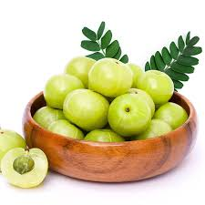
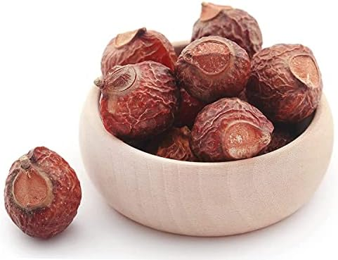
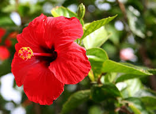
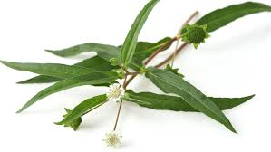

Abstract:
Background
Herbal based hair dyes are being preferred on large scale, due to the vast number of advantages they exert over chemical-based alternatives. We have attempted to prepare and standardize this preparation to ensure its quality as well as stability aspects for our clients' hair. Objective: The current research was aimed at the preparation of herbal hair dye and the evaluation of its various parameters as organoleptic, physico-chemical, phytoconstituents, rheological aspects, patch test and stability testing for its efficacy and shelf life.
Materials and Methods
The herbal dye was prepared in-house according to the proposed composition, using all the natural ingredients. The dye was prepared in-house according to the proposed composition, using all the natural ingredients. It was evaluated for its organoleptic, physico-chemical and As compared to the chemical based hair dyes, natural herbal dyes are being preferred nowadays. Herbal drugs without any adverse effects are used for healthy hair. 70% of human beings above 50 years struggle with the problem of balding and graying of hair. Graying starts on the skin of head at about 40 years, starting initially from the temples, followed by beard and chest.stability parameters.
Results
The values of different evaluations justified the usage of the hair dye herbal dye. The parameters were found to be comparable and sufficient for the evaluation of herbal dye in the case of hair dye.
Conclusion
Hair dye that offers a natural alternate, which can be used, irrespective of any side effects, has been developed. The results can be incorporated while developing the pharmacopoeial standards for pharmapoeial surveillance and drug development.
Introduction:
As compared to the chemical based hair dyes, natural herbal dyes are being preferred nowadays. Herbal drugs without any adverse effects are used for healthy hair. 70% of human beings above 50 years struggle with the problem of balding and graying of hair. Graying starts on the skin of head at about 40 years, starting initially from the temples, followed by beard and chest. People have been using natural dyes since ancient times for the purpose of dyeing carpets, rugs and clothings by the use of roots, stems, barks, leaves, berries and flowers. The need of herbal based natural medicines is increasing fastly due to their natural goodness and lack of side effects. Amla, Bhringraj, Henna, Mandara, Reetha, Sariva, Curry leaves and Methi seeds are well-known ayurvedic herbal drugs. Many different extracts from plant were used for the purpose of hair dyeing in Europe and Asia before the invention of modern dyes. Indigo, known as initial fabric dye, could be mixed with henna to create different shades of brown to black colour. Use of these chemicals can result in unpleasant side effects, such as skin irritation, allergy and breakage. Continual application of such compounds on natural hair causes multiple side effects such as hair fall, dry scalp, erythrema and also skin cancer. In India, henna has been used traditionally for colouring palms and hairs. There are so many herbs like Kikar, Bihi, Bhringraj, Patnag, Akhrot, Narra, Jaborandi, Jatamansi, Amla, Kuth, Giloe, Behera which are used as a major constituents in hair care preparations mainly meant for dyeing hair. Henna has been used traditionally for colouring women's bodies during marriage and other social celebrations since the times of Bronze Age. It is a part of Islamic and Hindu cultures as a hair coloring and dyeing agent for the purpose of decorating the nails or for the formation of temporary tattoos . In the present era of eco-conservation, the use of natural dyes has been revived and reviewed for the coloration of textiles and food materials. Drugs from the plant sources are easily available, are less expensive, safe, and efficient and rarely have side effects.
Background:
Herbal based hair dyes are being preferred on large scale, due to the vast number of advantages it exerts to overcome the ill-effects of a chemical based hair dye. We have attempted to prepare and standardize this preparation to ensure its quality as well as stability aspects. Herbal dye was prepared in-house according to the proposed composition, using all the natural ingredients. The dye was subjected to various parameters such as organoleptic, physico-chemical, phytoconstituents, rheological aspects, patch test and stability testing for its efficacy and shelf life. The dye was evaluated for its organoleptic, physico-chemical and stability parameters. Results were found to be comparable and sufficient for the evaluation of herbal dye. The values of different evaluations justified the usage of the hair dye in the laboratory tests conducted by researchers at the University of Nottingham Trent University. Herbal based hair dye has been prepared and evaluated using the various parameters. It offers a natural alternate, which can be used, irrespective of any side effects. The results can be incorporated while developing the pharmacopoeial standards.
Executive Summary:
1.Henna leaves

Henna is a natural hair colouring agent and conditioner. Women in India use this natural compound to strengthen, nourish and beautify their tresses. Henna is one of the best hair beauty ingredients that India has shared with the rest of the world. The most commonly known benefits of henna for hair are that it strengthens, nourishes and brightens the hair.Bottom of Form.
2.Amla
Amla, also known as Indian gooseberry, has been used since ancient times to deal with hair troubles. It contains essential vitamins and antioxidants that don't just improve the health of damaged hair but also work towards preventing hair problems. Amla can take care of hair fall, slow hair growth, and dandruff to dryness and split-ends.
3.Reetha
Sapindusmukorossi or Soap Nut or Reetha is an Ayurvedic medicinal herb. Grown in tropical regions of India, China and Japan, soap nut is a small spherical nut which contains saponin, a chemical compound with cleaning properties that has the tendency to produce foam with water. It is a great natural product for many of our cleaning needs.
4.Shikakai
Shikakai, also known as Shika in Tamil, Seekaaya in Telugu, and Soap pod in English, is a powerful ayurvedic plant that has been used for generations as a cleanser for long hair and dandruff management and relief in skin diseases.
Shikakai, also known as Acacia concinna in scientific terms, is a shrub-like tree native to Central India. It is typically found in the Indian subcontinent's tropical woods. The climbing shrub has oblong-shaped dark brown pods, bipinnate leaves, and pink flowers.
5.coffee

Here's how you can make your own chemical-free hair dye at home. Most hair colours contain chemicals that can damage your hair, making it look lifeless, dull and damaged. The cons that come with regular hair colouring are far too many to list here, but we couldn't stop ourselves from sharing them with you!
6.Black Tea
Black tea is rich in plant polyphenols, which are naturally occurring compounds that can act as antioxidants. Since black tea doesn't contain a developer, it cannot penetrate the hair shaft and permanently change its color. Any darkening effects you get from using black tea to color your hair will only be temporary.
If you're a blonde, don't expect to have black hair after using tea to dye hair. Black tea also will not drastically change the color of your hair. You can achieve a more dramatic effect by leaving the tea on your hair for a longer period of time, or by repeatedly dyeing hair with tea.
7.Hibiscus
We can use hibiscus and amla masks to strengthen our hair follicles and maintaining scalp health. For this mask, mix hihbiscus powder and Amla powder in equal amounts in water to make a smooth paste. Keep it for about 30 minutes and rinse it off with a mild shampoo.
8.Bhringraj
Bhringaraj oil is an ayurvedic hair tonic that is extremely beneficial for hair fall, grey hair and dandruff. Apart from benefitting the hair, it is also useful for skin problems, headaches, and mental weakness. Massaging your hair with this oil provides a calming effect on the head, increases memory and improves blood circulation on the scalp.
Bhringaraj oil is one of the amazing hair oils that can prevent hair fall and effectively promote hair growth. Siddha Yoga Sangraha, an ayurvedic organization was founded by Swami Muktananda which aims in benefitting the hair and overall health. This article brings you some of the best formulations in Ayurveda that can bolster immunity and also hair growth as mentioned in their works.
9. Jatamansi

Nardostachys jatamansi is an important drug of Ayurveda and is used in different traditional systems of medicine such as Ayurveda, Unani, Siddha, etc. Its rhizomes and roots are used as a tranquilizer, laxative, cardiac tonic, for curing vertigo, nervous headache, low and high blood pressure, etc.. The rhizomes as well as roots of the plant are medicinally rich and therefore, have been the focus of chemical studies
Description of the project:
1. Henna
Its principle coloring ingredient of is lawsone, a red orange colored compound present in dried leaves of the plant in a concentration of 1 1.5% w/w. Lawsone is a non oxidizing hair dyeing agent which acts as a non-oxidizing agent at a maximum concentration of 1.5% w/w/w. The company says its principle coloring ingredient of is lawsone, a red orange colored compound. Other constituents such as flavonoids and gallic acid act as organic mordants to the process of colouring the henna. Carbohydrates give the paste a suitable consistency for adherence to the hair. Carbohydrates give the henna paste a suitable consistency for adherence to the hair . Natural henna is usually hypoallergenic. This occurs due to chemical compounds consisting of para-phenylenediamine¸ 2-nitro-4- phenylenediamine¸ 4-aminophenol and 3-aminophenol. Henna prevents premature hair fall by balancing the pH of the scalp and graying of hair. Henna has also antifungal activity against Malassezia species (causative organism of dandruff) Henna leaf paste used for alleviating Jaundice, Skin diseases¸ Smallpox¸ etc. Extract of Henna leaves with ethanol (70%) showed significant hypoglycaemic and hypolipidaemic activities in diabetic mice.
2. Amla
Berries obtained from amla enhances the absorption of calcium, helping to make healthier bones, teeth, nails, and hair. It maintains the hair color and prevents premature graying, strengthens the hair follicles and keeps it shiny and lustrous. Amla is the most rich and concentrated form of Vitamin C along with tannins found among the plants, according to the World Health Organization. The Vitamin C found in the fruit binds with tannins that protect it from being lost by heat or light . Thisfruit is also rich in minerals such as Calcium, Phosphorus, Fe and amino acid . The extract of Amla fruit extract is useful for hair growth and reduces hair loss. It has antibacterial and antioxidant properties that can help promote the growth of healthy and lustrous hair.
3. Reetha
Reetha extract is useful for the promotion of hair growth and reduced dandruff. Extract of fruit coat acts as a natural shampoo, therefore is used in herbal shampoos in the form of hair cleanser. Reetha fruits are rich in vitamin A, D, E, K, saponin, sugars¸ fatty acids and mucilage. Reethas, also known as washing nuts or washing soap nuts, play an important role as natural hair care products since older times. This plant is enriched with saponins, which makes the hair healthy, shiny, and lustrous when used on a regular basis.
4. Shikakai
It contains Lupeol, Spinasterol, Lactone, Hexacosanol, Spinasterone, Calyctomine, Racimase-A Oleanolic acid, Lupenone, Betulin, Betulinic acid, Betulonic acid. The extract obtained from its pods is used as a hair cleanser and for the control of dandruff. Shikakai or acacia concinna has rich amount of vitamin C, which is beneficial for hair. Acacia Concinna naturally lowers the pH value and retains the natural oils of the hair and keeps them lustrous and healthy. Amla, reetha and shikakai compliments each other, therefore, they are mixed together to have healthy and lustrous hair. It is effective in strengthening and conditioning hair as well as making it more supple and suppling with extra-strong follicles. Three ingredients called Amla, Reetha and Shikakai are used to make hair soft and silky. They help prevent split ends, hair fall, dandruff, greying of hair and other hair related problems. All of these ingredients come in two forms, one as a dried fruit and other in powdered form.
5. Coffee
In hair colorants, herbs can be used in the form of powder , aqueous extract or their seed oil to impart shades of different colour varying from reddish brown to blackish brown. The herbal drugs like coffee powder obtained from its seeds are used as hair colorant.
6. Tea
Being rich in polyphenols, selenium, copper, phytoestrogens, melatonin and other nutrients, tea is said to be rich in antioxidants and anti-oxidants such as flavanols and thiamine.
7. Hibiscus
Hibiscus exhibits antioxidant properties by producing flavonoids such as anthocyanins and other phenolic compounds. This flower is used for controlling dandruff. Hibiscus is naturally enriched with Calcium, Phosphorus, Iron, Vitamin B1, Vitamin C¸ Riboflavin and Niacin, which help to promote thicker hair growth and decreases premature graying of hair. It can be used to rejuvenate the hair by conditioning it
8. Bhringraj
The extract of bhringraj is used in the preparation of various oil, shampoo, hair dye and other products. The oil based extract of leaves has been used traditionally for improving hair growth and for imparting natural colour to grey hair. Neelibhringaadi Tailam, mentioned in Ayurveda is suitable for promoting hair growth, according to experts.
9. Jatamansi
Nardostachys jatamansi is an important drug of Ayurveda. Its rhizomes and roots are used as a tranquilizer, laxative, cardiac tonic, for curing vertigo, nervous headache, low and high blood pressure, etc. The rhizomes as well as roots of the plant are medicinally rich and therefore, have been the focus of chemical studies.
Methods and procedures:
1.Henna leaves
It is a natural hair dye:
If you are reluctant to use chemicals on your scalp but want to cover greys, henna is a natural alternative.

To Prepare Henna (Mehendi) Hair Color Pack
• Take henna powder in a bowl
• Sift this henna to ensure no lumps are present in the henna taken to apply on the hair
• Add a little black tea water in this henna
• And let it soak for over 6-8 hours
• Apply this paste on hair and wash it off with water (no shampoo or conditioner)
• Take a little indigo powder and add a little warm water to get a thick consistency
• Apply this paste on the hair and wash it off after 30 minutes
• Use a shampoo and a conditioner after 1-2 days of this entire process to get a deep black
2.Amla
Add amla to your hair Mask
This amla-based hair mask is made using amla in combination with yoghurt and banana. Not only will it cleanse your hair and scalp but will also have long term benefits such as stronger roots and reduced hair fall.
To prepare the amla hair mask
• Mix 1 teaspoon of amla with 3 teaspoons of yoghurt.
• And half a mashed banana.
• Apply this paste to your scalp and along the length of your hair.
• Let it stay for 20 to 25 minutes before washing it off with water.
Or as a hair rinse
Using an amla hair rinse is a great way to add a boost of proteins and antioxidants to your hair care routine. Add ½ cup of amla juice to 100ml water and pour it over your scalp and tresses. After you’re done washing your hair, pour this hair rinse over your scalp and tresses. You can choose to wash it out but leaving it on will have greater effects for your hair health!
3.Reetha
Reetha can be used for hair treatment in two different forms- liquid or powder. Other ingredients like amla, reetha and shikakai can also be used together to curb hair fall. The ways in which these three ingredients can be combined are as easy to use as they are to create.
To prepare
• Remove the shell of 7-10 soap nuts.
• Obtain Shikakai and boil these both in water.
• Leave overnight to cool.
• Strain this mixture in the morning.
To Apply
Apply it on your scalp and massage like shampoo.
Wash off with water.
4.Shikakai
Anti-Grey Hair Pack
An excellent pack made of Shikakai for grey hair blended with Henna powder, Amla powder, curry leaf powder and hibiscus flower works wonders for premature greying of hair. Henna is a natural colouring agent does no harm to the hair follicles, and Amla and Curry leaves are rich in anti-bodies that prevent hair damage and nourish it.
To make this paste
• To take about 1/4th cup of Amla powder,
• To take about ½ cup of Henna powder,
• A paste of 5-6 fresh Hibiscus flowers,
• And 1/4th cup of fresh Curry leaf. Mix all of it with a little black brewed tea.
• Can apply this pack once a week or once in 15 days.
• However, avoid using too much Henna powder since overusing it can dry up your hair.
5.coffee
A cup of brewed coffee can do more than just give you a caffeine boost. It can also help dye your hair a shade or two darker, and may even cover up some gray hair.
To dye your hair with coffee:
• Brew a strong cup of dark-roast coffee.
• Mix about 1/2 cup of coffee with 2 tbsp. of coffee grounds and 1 cup of leave-in hair conditioner.
• Apply the mixture to clean, damp hair.
• Let the mixture set for at least an hour, and wash it out when you’re done.
• Repeat if necessary.
Coffee won’t provide a drastic change to your hair, and it won’t last for long. But if you need a quick and affordable boost, it’s a good option to try.
6.Tea
Herbal Dye Hair with Black Tea
Now that you’ve learned how black tea hair dye works and its benefits, learn how to dye hair with tea:
• Brew some strong tea using 3-5 teabags of black tea per one cup of water. For additional darkening, add some dried sage to the mixture. • Allow the tea to cool, then apply the tea to dry hair using a hair dye applicator bottle. • Let the tea sit in your hair for at least an hour. For more intense results, put on a shower cap and leave the tea in your hair overnight.
• Rinse out hair thoroughly, then apply a lightweight nourishing conditioner like Viviscal Gorgeous Growth Densifying Conditioner.
Always do a skin test of any new hair dye or at-home beauty recipe before applying it to your hair and scalp. If you have sensitivities or allergies to the ingredients, don't use them. Repeating the dyeing process will give you darker, more intense results.
7.Hibiscus
Use Hibiscus Oil for Hair
Hibiscus oil benefits hair by improving blood circulation on the scalp and in the hair follicles. It can be used thrice a week to reap maximum benefits.
• Take a few leaves and flowers, around 8-10, and grind them into a fine paste.
• Heat coconut oil and add the paste to it. Heat the mixture.
• Let it cool down.
• The oil is ready to use. Massage it on the scalp for a few minutes.

Use Hibiscus Powder for Hair
We can use hibiscus and amla masks to strengthen our hair follicles and maintaining scalp health. For this mask, mix hihbiscus powder and Amla powder in equal amounts in water to make a smooth paste. Keep it for about 30 minutes and rinse it off with a mild shampoo.
Use a Hibiscus Flower for Hair
Hibiscus Hair Mask
The mask makes hair manageable and provides nourishment to the hair. For this, Grind about 3-4 hibiscus leaves and one hibiscus flower to make a paste.
• Add a cup of yoghurt to it.
• Apply the paste to the hair and keep it for an hour.
• Rinse it off with a mild shampoo.
• Use it 1-2 times a week.
• We can also add 3 spoons of ginger juice or 2 egg whites to the hibiscus flower paste to promote hair growth.
8.Bhringataj
Bhringaraj oil is a classic ayurvedic hair tonic that is extremely beneficial for hair fall, grey hair and dandruff. It provides a calming effect on the head, increases memory, improves blood circulation on the scalp and promotes hair growth. Apart from benefitting the hair, it is also useful for skin problems, headaches, and mental weakness. This article brings you one of thebest formulations in Ayurveda that can bolster immunity and also hair growth as mentioned in Siddha Yoga Sangraha.
How To Make Bhringaraj Oil? Ingredients: Herb Juice:
2560 grams - Bhringaraj juice 640 grams - Amla juice (Emblicaofficinalis) 640 grams - Brahmi juice Base Oil: 1280 grams - Sesame (Til) OilMethod:
Extract the juices of the herbs and keep it aside. Purify the sesame oil. Prepare the paste or kalka of the herbs by mixing with water or cow’s milk. Mix all the ingredients, i.e. juices, oil and kalka in a mixing bowl. Put the vessel over the flame and keep stirring until the herbs mix and only the oil remains. Remove it from the flame and allow it to cool and settle for a few days. Store it in a glass container and your bhringaraj oil is ready to be used.Stops Premature Greying Of Hair
Henna prepared with the leaves of bhringaraj is also helpful in dyeing the hair, according to experts. The oil contains haritaki and Jatamansi which are extremely beneficial in maintaining the natural colour of hair.
RESULTS AND DISCUSSIONS
Uses of Hair Dye
The prepared herbal hair dye contains all the goodness of natural ingredients. It also acts as a hair growth promoter, hair nourisher, conditioner and anti-dandruff agent. The formulation of this herbal hair dye contains all the goodness of natural ingredients from around the world. Henna acting as the base powder, acts as the universal hair dye as it used for its colouring properties throughout the globe. It is also beneficial in the removal of excess oil from the scalp and conditions the hair well. The extract of jatamansi is helpful in the growth of hair. Bhringraj aids in improving the circulation of blood flow at the root of the hair by providing more nutrients to support hair growth. The extract of Reetha is beneficial for smooth, silky and healthy hair too. Shikakai is packed with vitamins A, C, D and K, which together form a powerful antioxidant. This antioxidant is probably the only thing your hair needs to cleanse the scalp of the sebum buildup. Regular using of hibiscus flower juice can easily restrict hair fall control, dandruff and graying of hair even when you are touching 50 years of age. Amla contains essential fatty acids, which strengthen hair follicles and provides shine and new life. The sufficient amount of vitamin C in amla helps to halt pre-mature greying. It is a great hair conditioner and also remover of dandruff. For those who have been struggling for healthy hair that is free from grey hair, try amla. Coffee for hair strengthens hair by improving the overall quality and texture. Tea imparts perfect colour to the hair in combination with other herbs. It is absorbed by the follicles, making them softer and shinier, instantly. Organoleptic evaluation findings revealed that the pack is smooth and pleasant smelling powder. Tea is good for the growth of hair and fights against dandruff. Tea imparts colour to the hair as well as improving the overall quality and texture of it. The scalp's moisture content was found to be minimal, with levels as low as 1.9%, and the pH was found neutral to suit the requirements of different scalp types. It shows the presence of major phytoconstituents, which acts as true nourisher for the scalp as well as hair. Ash value was found to be nominal, signifying that the scalp has been treated with appropriate amounts of inorganic radicals in appropriate amounts. Inertness tests performed at different temperatures over a regular period of one month disclosed the inert nature of the pack in the terms of colour, odour, appearance, texture, and pH. Irritancy test revealed negative results for irritancy, redness and swelling as the herbals in their natural form without use of artificial additives were found to be compatible with the proteins of hair. The formulation was kept for one month at room temperature to observe the changes in its color, odour, texture and appearance. From the above observations, it has been signified that since the formulation is constituted with naturally occurring dried herbal ingredients, there are almost minimal possibilities of the deterioration of the formulation, as there is no moisture containing substance in either raw or processed form. The pH was also noticed before and after one month. It can be easily stored and used at any temperature, at any place. Since it is a natural herbal based formulation, it is free from the ill-effects of ammonia based chemical dyes. However, the regular use of it provides voluminous, smooth and well coloured hair. Natural ingredients are known for their non-toxic, non-habit forming properties and no chemicals, preservatives, artificial colors or perfumes has been incorporated in the pack. This leads to an increased shelf life with stable ingredients. The chances of its degradation are almost close to the minimal. Its continuous use shows superb effects later on.
Conclusion:
The advantages of herbal based cosmetics are their nontoxic nature. It nutrifies the skin of the scalp and hair. This hair formulation provides vital nourishment to the skin. A herbal hair pack colours the hair in an utmost gentle manner to give it a natural, natural-looking appearance. It helps to treat dandruff by removal of excess oil from scalp. Frequent use of this pack leads to manageable, frizz free coloured hair. Pollution, ageing, stress and harsh climates badly affect the quality of hair. Further studies are needed to explore more useful benefits of this herbal hair pack. Natural remedies are widely accepted nowadays as they are safer with minimal side effects. Herbal formulations are in great demand to fulfill the needs of the growing world market. It is a noticeable attempt to formulate the herbal hair pack containing the goodness of powders of different plants, which are excellent for hair care.
Reference:
1.Kumar S, Akhila A, Naqvi AA, Farooqi AH, Singh AK, Uniyal GC, et al.
2.Natural dyes and their applications to textiles 1992; 1-2.
3. Orfanos CE, Happle R. Hair and hair diseases 1990; 19-44.
4.Gulrajani ML. Natural colorants and dye 2004; 1: 98-117.
5.Indian herbal drugs: Current status of herbal drugs in India: J ClinBiochemNutr 2007; 41(1): 1-11.
6. Indian herbal remedies: Rational western therapy, ayurvedic, and other traditional usage. J SocCosmetChem 1982: 33: 375-83.
7.Madhusudan RY, Sujatha P. and Mielke H. Lead-based hair products: Too hazardous for household use. Edward sagarin, cosmetics science and technology 1972. Nat Prod Rad 2008; 7(1): 45-8.
8. Mielke H. Lead-based hair products: Too hazardous for household use. J Am Pharm Assoc 1997
9. Balsam MS. Edward sagarin, cosmetics science and technology 1972.
10. Koutros S, Silverman DT, Baris D, et al.Hair dye use and risk of bladder cancer in the New England bladder cancer study. Int J Cancer 2011; 129(12): 2894-904.
11. Kalia AN. Text book of industrial pharmacognosy 2005; 264.
12. Kumar S, Akhila A, Naqvi AA, Forooqi AHA, Singh AK, Singh D. Medicinal plants in skin care 1994; 51-62.
13. Baran R, Maibah HI. Cosmetic dermatology in children Text book of cosmetic dermatology 2nd ed. 1998; 507-8.
14 Nadkarni KM. Indian materiamedica 1976; 630-, 680, 1202.
15. Al-Suwaidi A, Ahmed H. Determination of para-phenylenediamine (PPD) in henna in the United Arab Emirates. Int J Environ Res Public Health 2010; 7(4): 1681-93.
16. Polat M, Dikilitaş M, Oztaş P, Alli N. Allergic contact dermatitis to pure henna. Dermatol Online J 2009; 15(1): 15.
17. Kumar KS, Begum A, Shashidhar B, et al.Formulation and evaluation of 100% herbal hair dye. International Journal of Advanced Research In Medical & Pharmaceutical Sciences 2016; (2):
18. Mac DougallColor in food woodhead publishing Ltd 1st Ed.. 2002.
19. Ali NF, El-Mohamedy RSR. Eco-friendly and protective natural dye from red prickly pear (Opuntialasiacantha Pfeiffer) plant. J Saudi ChemSoc 2010; 15: 257-61.
20. Patel MM, Solanki BR, Gurav NC, Patel PH, Verma SS. Method development for Lawsone estimation in Trichup herbal hair powder by high-performance thin layer chromatography. J Adv Pharm Technol Res 2013; 4(3): 160-5.
21. S.G. DESIGN AND EVALUTION OF HERBAL HAIR OIL FORMULATIONS BY USING ETHANOLIC EXTRACT OF Ziziphusjujuba Mill. LEAVES Int J Pharma Bio Sci 2017; 8(3): 322-7.
22. Saif FA. Henna beyond skin arts: Literatures review. J Pak AssocDermatol 2016; 26(1): 58-65.
23. Grabley S, Thiericke R. Bioactive agents from natural sources: Trends in discovery and application. AdvBiochemEngBiotechnol 1999; 64: 101-54.
24. Chaudhary G¸. Lawsoniainermis Linnaeus: A phytopharmacological review. Int J Pharm Sci Drug Res 2013; 2(2): 91-8.
25. Singh E, Sharma S, Pareek A, Dwivedi J, Yadav S, Sharma S. Phytochemistry, traditional uses and cancer chemopreventive activity of amla (Phyllanthusemblica): The sustainer. J Appl Pharm Sci 2011; 2: 176-83.
26. Nisha P, Singhal RS, Pandit AB. A study on degradation kinetics of ascorbic acid in amla (Phyllanthusemblica L.) during cooking. Int J Food SciNutr 2004; 55(5): 415-22.
27. Nisha P, Singhal RS, Pandit AB. A study on degradation kinetics of ascorbic acid in amla (Phyllanthusemblica L.) during cooking. Int J Food SciNutr 2004; 55(5): 415-22.
28. Turner DM. Natural product source material use in the pharmaceutical industry: The Glaxo experience. J Ethnopharmacol 1996; 51(1-3): 39-43.
29. Anjali J¸. Hair care formulations. World J Pharm PharmSci 2016; 5(6): 630-48.
30. Fatima A¸. Int J Pharm Sci Res 2013; 4(10): 3746-60.
31 Wonderful benefits and uses Of soapnuts (Reetha). Home, health and wellness, ingredients and uses http://www.stylecraze.com/articles/ benefits-of-soapnuts-for-skin-hair-and-health/#gref
32. Fatima A, Alok S, Agarwal P, Singh P, Verma A. Benefits of herbal extracts in cosmetics: A review. Int J Pharm Sci Res 2013; 4(10): 3746-60.
33. Haircare: Include amla, reetha and Shikakai for healthy and happy hair. NDTV FOOD. Anusha Singh updated: May 10, 2018 Available from: https://food.ndtv.com/beauty/haircare-include-amla-reetha-and-shikakai-for-healthy-and-happy-hair-1848507
34. Upadhyay VP, Mishra AK. Workshop on selected medicinal plants. 1985. In: Ministry of Commerce, Chemexcil; Bombay. 1985.
35. Upadhyay VP. International Seminar on Medicinal Plants. Plants as cosmetics 1985. In: Mungpoo, Govt. of West Bengal: Publication and Information Directorate, CSIR,; New Delhi. 1985.
36. Upadhyay VP. Current research in ayurvedic medicine (International Seminar). 1980. In: Himalayan Institute; Chicago, USA. 1980.
37. Wealth of India. Raw materials. Anonymus 1997; 1
38.Kitrikar K, Basu BD. Indian Medicinal Plants 2nd ed. 1993; Vol. I: 335-6.
39.Chopra RN, Nayar SL, Chopra IC. Glossary of indian medicinal plant 1956.
40.Ambasta ST. Useful plants of india 1986.
41.Trüeb RM. Pharmacologic interventions in aging hair. ClinInterv Aging 2006; 1(2): 121-9.
42.Chein E. Age reversal, from hormones to telomeres 1998.
43.Lurie R, Ben-Amitai D, Laron Z. Laron syndrome (primary growth hormone insensitivity): a unique model to explore the effect of insulin-like growth factor 1 deficiency on human hair. Dermatology (Basel) 2004; 208(4): 314-8.
44.Banerjee PS. Spectrophotometric methods for the determination of selected drugs in pharmaceutical formulations. J Chem Pharm Res 2009; 1(1): 261-7.
45.Dweck AC. On the Centellaasicatica trail. Soap. Perfumery and Cosmetics Asia 1996; 1: 41-2.
46.Khare CP. Encyclopedia of indian medicinal plants 2004; 197-8.
47.Williamson EM. Major herbs Of ayurveda 2002; 126-8.
48.Porwal P, Sharma A, Gupta SP. Henna based cream preparation, characterization and its comparison with marketed hair dyes. J Herbal Med Tech 2011; 5(1): 55-61.
49.Banerjee P, Sharma M. Preparation, evaluation and hair growth stimulating activity of herbal oil. J Chem Pharm Res 2009; 1(1): 261-7.
50.Baziga KA, Heyan SA. Formulation and evaluation of herbal shampoo from zizyphus spine leaves extract. Int J Res Ayurveda Pharm 2011; 2(6): 1802-6.
51.Subedi BP, Shrestha R. Plant profile: Jatamansi (nardostachys grandiflora). Himalayan Bioresources 1999; 3: 14-5.
52.Chaudhary S, Chandrashekar KS, Pai KS, et al. Evaluation of antioxidant and anticancer activity of extract and fractions of Nardostachysjatamansi DC in breast carcinoma. BMC Complement Altern Med 2015; 15: 50.
53.Purnima BM. Kothiyal P. A review article on phytochemistry and pharmacological profiles of Nardostachysjatamansi DC-medicinal herb. Journal of pharmacognosy and phytochemistry 2015; 3(5): 102-6.
54.Pal RS, Pal Y, Wal P. In-house preparation and standardization of herbal face pack. Open Dermatol J 2017; 11: 72-80.
55.Wallis TE. Text book of Pharmacognosy 5th Ed.. 2002; 123(132): 210-5.
56.Rajpal V. Standardization of botanicals. New Delhi. Eastern Publishers 2002; 1: 39-44.
57.Tandon N, Sharma M. Quality standards of indian medicinal plants. New Delhi. Indian Council of Medical Research 2010; 8: 161-3.
58.Kokate CK, Purohit AP, Gokhale SB. Pharmacognosy 42nd ed.. 2008; 6: 1-A1.
59.Khandelwal KR. Practical pharmacognosy 12th ed. 2004.
60.Lachman L, Lieberman HA, Kanig JL. The Theory and practice of industrial pharmacy 3rd ed. 1987.
61.Aulton ME. 2002.
62.Mandeep S, Shalini S, Sukhbir LK, Ram KS, Rajendra J. Preparation and evaluation of herbal cosmetic cream. Pharmacologyonline 2011; 1258-64.
63.Rani S, Hiremanth R. Formulation & evaluation of poly-herbal face wash gel. World J Pharm PharmSci 2015; 4(6): 585-8